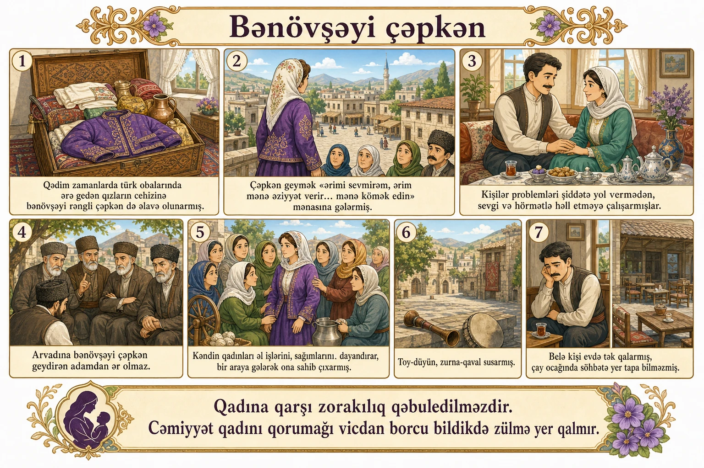

Bənövşəyi çəpkən
Qədim zamanlarda türk obalarında belə bir adət varmış: ərə gedən qızların cehizinə digər əşyalarla birlikdə bənövşəyi rəngli çəpkən də əlavə olunarmış. Çəpkən cehiz sandığının lap dibinə qoyular və qadının onu heç vaxt geyməməsi arzulanarmış.
Bənövşəyi çəpkən kişilərə qənim ola biləcək bir libas imiş. Çünki qadın o çəpkəni geyib evin damına, bacasına, kənd meydanına — hər kəsin görə biləcəyi bir yerə çıxsaydı, bu, «ərimi sevmirəm, ərim mənə əziyyət verir, könülsüz evləndim, boşanmaq istəyirəm, ağır vəziyyətdəyəm, mənə kömək edin» mənasına gələrmiş. Belə olanda kənd camaatı o qadına yardım edər, ərini isə qınayarmış. Bu, kişi üçün böyük ayıb sayılarmış.
Bu səbəbdən kişilər həyat yoldaşları ilə problemlərini şiddətə yol vermədən, sevgi və hörmətlə, üstəlik xanıma mühüm güzəştlər edərək həll etməyə çalışarmışlar. Əks halda qadının bənövşəyi çəpkən geyəcəyini bilirdilər.
Arvadı bənövşəyi çəpkən geymiş kişi nəinki boşanmağa məcbur olar, hətta bir daha asanlıqla evlənə bilməzmiş. Çünki hamı bilirmiş ki, arvadına bənövşəyi çəpkən geydirən adamdan ər olmaz. Qadına hörmət etməyən, şiddət göstərən adama bir daha kimsə qız verməz, onun yenidən evlənməsi çox çətin olarmış. Deyilənə görə, məhz buna görə şiddətə məruz qalan qadınların sayı az qala yox səviyyəsində imiş.
Əgər bir qadın bənövşəyi çəpkənini geysəydi, o zaman axan sular durar, inək sağan, yun əyirən, kilim toxuyan əllər dayanar; yaşlı analar, nənələr işini-gücünü buraxıb bənövşəyi çəpkən geyməyə məcbur olmuş qadının müdafiəsinə qalxarmış.
Bu vaxt ətrafda nə toy-düyün, nə zurna-qaval, nə də başqa bir əyləncə varmışsa, hamısı susarmış. Çünki evli qadının bənövşəyi çəpkən geyməsi, ağır vəziyyətə düşməsi ölüm kimi qəbul edilərmiş.
Bənövşəyi çəpkən geymiş qadının əri evdən bayıra çıxa bilməz, çayxanaya gedə bilməz, kimsə də onun üzünə baxmazmış.
Qadına qarşı zorakılıq qəbuledilməzdir. Cəmiyyət qadını qorumağı vicdan borcu bildikdə zülmə yer qalmır.
